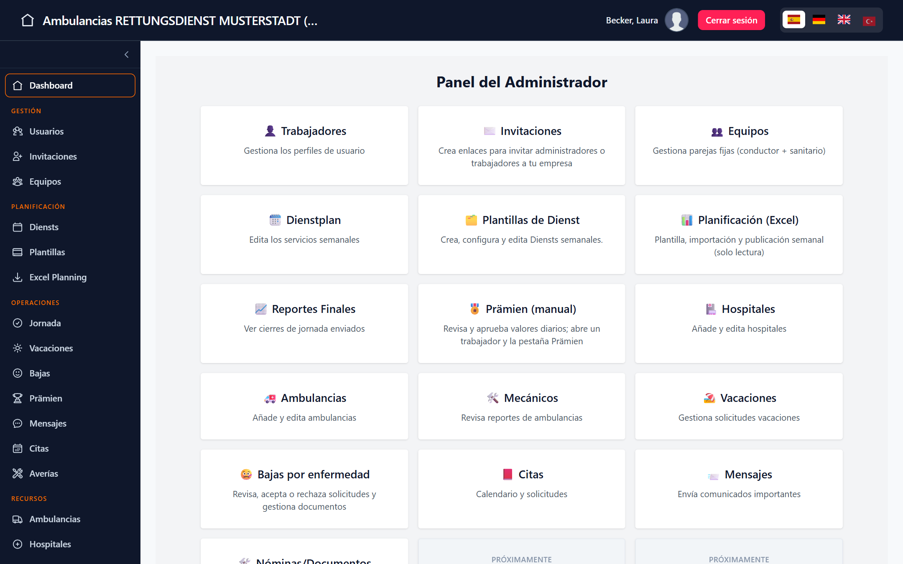
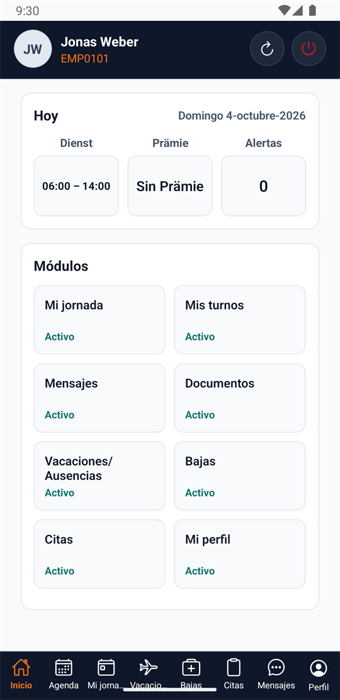
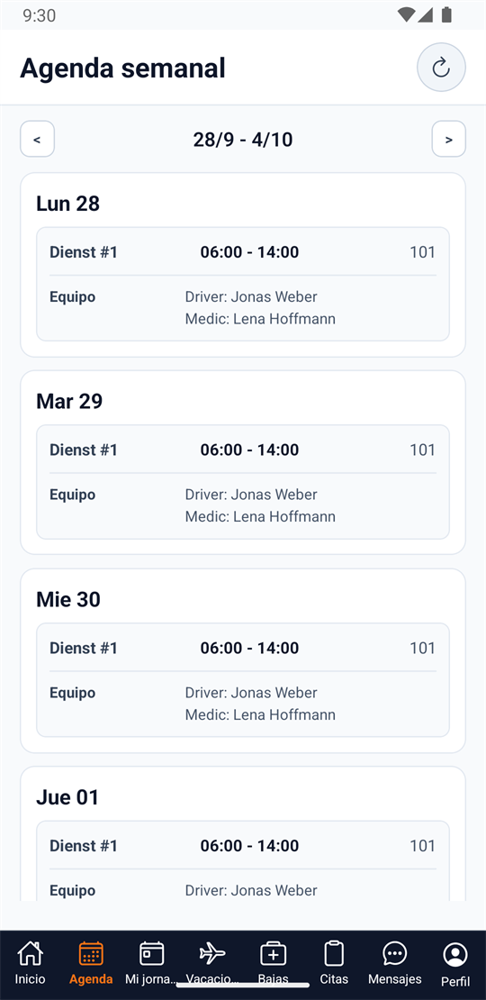

Context
Ambulance companies run on tight schedules: weekly duty rosters, two-person crews (driver + paramedic), vehicles, sick leave, holidays, documents and monthly bonuses. In many small companies this lives in spreadsheets and messaging apps.
I work in Emergency Medical Services (EMS) in Berlin as a Rettungssanitäter and know these workflows from the crew side. GoRuiz was my attempt to build the system I would want an ambulance company to use — and a way to learn how a multi-tenant product with sensitive data is built properly. I developed it outside my EMS shifts.
What it covers
- Planning: weekly shift planning from reusable templates with team rotation and vehicle assignment; alternative weekly import from Excel.
- Field work: mobile workday flow — start of day (vehicle and odometer), trips (pickup, destination, hospital), partial and final closure; vehicle defect reports for mechanics.
- People: holiday requests with approval, rejection or alternative dates; sick leave with document upload and review; appointments and internal messages.
- Documents and pay: company documents with read acknowledgment; payslip PDFs uploaded in batches and matched by employee number (ambiguous files are never auto-assigned); monthly bonus (Prämien) calculation with configurable rules.
- Platform: company onboarding and per-company module activation, security monitoring, audit log and time-limited support access with approval.
Architecture
A monorepo with three independent applications that talk only over HTTP and WebSocket. The web panel serves company admins and the platform superadmin, including worker views; field crews use the Expo app. One API serves both client applications, with role-based access for admins, workers, mechanics and the superadmin.
Backend
Express 5 and TypeScript with one folder per business domain (src/modules/*). Controllers only parse the request, call a service
and return JSON; business rules and tenant checks live in the service layer. Request bodies are validated with Zod, MongoDB is accessed through
Mongoose 8, and multi-document operations use transactions — which is why the database runs as a replica set, also in tests.
Scheduled jobs run with node-cron, and every company has a list of enabled modules that middleware checks on each route.
Web frontend
React 19, Vite 6, Tailwind CSS 4 and React Router 7. Code is organised by business domain; each module keeps its HTTP calls in
domain/api.ts on top of one shared Axios instance (base URL, token and error handling), so components never call the network
directly. Sensitive files are opened through a single helper that uses the authenticated file endpoint — never a public link.

Mobile app
Expo SDK 54 / React Native 0.81 for field crews: today's shift, the workday flow, weekly agenda, holidays, sick leave, documents and messages. The session is stored with Expo SecureStore, and push notifications go through Expo Push and Firebase Cloud Messaging.



Multi-tenancy
Several companies share one deployment. Every admin operation is scoped by companyId in the service layer, and the company of
the current user is resolved from the database rather than trusted from the token. Records created before the tenant field existed are
handled explicitly through the owning user, so legacy data stays reachable without weakening isolation.
A dedicated tenant-isolation test suite runs as its own CI job on every pull request.
Authentication, authorization and security
- JWT with token versioning — incrementing a user's token version revokes their existing sessions, on HTTP and WebSocket.
- Role-based access for four roles, with a strict boundary: the platform superadmin cannot use company-admin routes and has its own.
- TOTP MFA and step-up re-authentication for critical superadmin actions.
- Time-limited support access to a company's data, with approval, a persistent audit log and a monitoring dashboard.
- Private files: medical documents, PDFs and attachments are served only through an authenticated endpoint with ownership checks; the public uploads path serves images only.
- Hardening: Helmet, rate limiting on sensitive endpoints, and Gitleaks secret scanning in CI.

Real-time updates
A WebSocket channel pushes minimal { event } signals such as "shifts changed". Clients then refetch through the normal
authenticated API, so no business data travels over the socket and the same authorization rules apply to everything the user sees.
Socket connections validate the same JWT and token version as HTTP requests.
API documentation
The API is described in an OpenAPI 3.0.3 specification (95 operations across 78 paths) with a read-only Swagger UI. CI validates the generated spec artifact and the smoke test checks that the docs endpoint responds, so documentation cannot silently disappear from a build.
Testing and CI
893 backend tests, mostly integration tests with Jest and Supertest against a real MongoDB replica set, and 432 frontend tests with Vitest and Testing Library. All passed at archive time.
GitHub Actions runs three jobs on every pull request:
- validate — typecheck of backend, web and mobile; Gitleaks secret scan; builds; OpenAPI artifact validation; frontend tests; mobile app checks.
- security-isolation — tenant-isolation and security test suites against MongoDB.
- backend-smoke — builds the API, starts it and checks the health and docs endpoints.
A separate workflow runs Gitleaks on its own as well.
Internationalization
The web panel uses i18next with Spanish, German and English, following German ambulance-service terminology (Dienst, Prämien, P-Schein). Translation is not complete: some admin sidebar labels and table headers are still hard-coded in Spanish. These gaps are documented as known debt rather than hidden.
Key decisions and trade-offs
- Modular monolith instead of microservices One deployable API with strict domain folders. Simpler to run and test for a single developer; the cost is that boundaries depend on discipline, not infrastructure.
- Tenant checks in the service layer Safer than route-level checks alone because every caller goes through them — at the price of more explicit code in each service.
- Integration tests against a real database Catches query, index and transaction problems that mocks would hide. The cost is a slower suite and higher memory use (see problems below).
- WebSocket as a signal, not a data channel No duplicated authorization logic on the socket. Costs one extra request per update.
- MongoDB with transactions Flexible documents for evolving modules, but transactions require a replica set everywhere — including local development and CI.
- AI-assisted development under explicit rules I used AI coding tools during parts of the project, constrained by written rules for architecture, tenant isolation, file security and testing. Every change went through my own review.
Problems I ran into
- WebSocket registration window. The server authenticated the socket asynchronously and only then registered it, so an event emitted in those milliseconds was lost. Tests now wait for server-side registration; the proper fix is listed below.
- Memory growth in the test suite. Running all backend tests in one process ran out of memory. A dedicated script runs one worker with a memory limit that recycles it — the suite is reliable, but the root cause is still open.
- A conditional React hook. A form hook was called conditionally and could crash on re-render. Fixed and covered with a regression test.
- Dependency hygiene in a monorepo. An undeclared type dependency broke hosted builds, and installing the mobile workspace on its own pulled in a second copy of React. The first was fixed; the second is documented with the correct install procedure.
Known technical debt
- Express
trust proxyis not configured, so behind a reverse proxy all clients share one rate-limit counter. It must be set for the real proxy topology before any redeploy. - Frontend lint runs but does not pass (mostly
no-explicit-any) and is not enforced in CI. - Two modals call hooks after an early return; harmless with the current mounting pattern, but fragile.
- Incomplete translations (see above) and two runtime assets loaded from public CDNs.
- Node 20 is out of support; the backend suite was verified only on Node 20.
What I would do differently
- Validate earlier with a real company. I built breadth before testing the product with a pilot customer. Next time: a smaller scope in front of real users much sooner.
- Enforce lint and translation checks in CI from day one. Both are cheap at the start and expensive to clean up later.
- Authenticate WebSockets during the HTTP upgrade, before the connection is accepted, instead of after.
- Generate the API client from the OpenAPI spec instead of maintaining hand-written calls in each client.
- Keep deployment configuration as code, including proxy settings, so hosted environments are reproducible and reviewed like the rest of the code.
Code and demo
The repository is private. It includes a recovery guide that rebuilds the whole system locally, the archived test results and the known-issues log. I'm happy to walk through the code, the architecture and a local demo in an interview.
Demo and code walkthrough available on request.